比Jev更爆火！逆向灭霸 REA 一天登顶GitHub
来源：微信公众号 归档日期：2026-10-11 抓取状态：成功 原文字符：2766｜配图：17 张
摘要速览
- 这两天，GitHub 上一个叫 REA（Reverse Engineer Anything）的项目狂揽了近 7 万颗星！ 作为对比，年初创造了增长奇迹，引领全民养「龙虾」的 OpenClaw，其 GitHub Star 增长曲线是这样的，开始爆发的第三天累计新增了 6 万颗星，而 REA 第三天（今天）已经接近 8 万颗星：
核心内容
（待补充）
可执行启发
（待补充）
我的想法
（待补充）
原文沉淀
来源：https://mp.weixin.qq.com/s/opomqvcruvmcQr4fzTT5Sg 平台：weixin｜作者：新智元 抓取方式：cdp｜字符数：5609｜图片：18
###
新智元报道
这两天，GitHub 上一个叫 REA（Reverse Engineer Anything）的项目狂揽了近 7 万颗星！
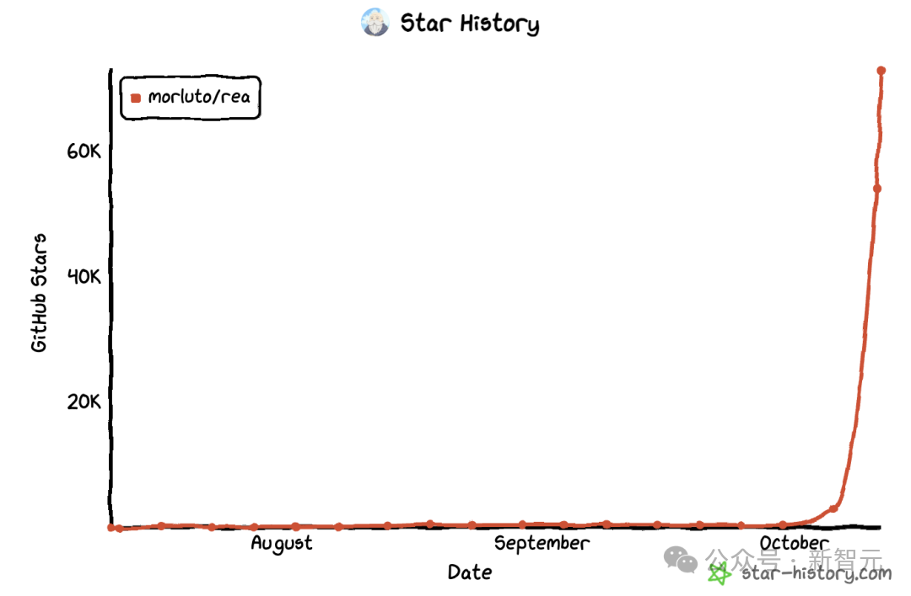
作为对比，年初创造了增长奇迹，引领全民养「龙虾」的 OpenClaw，其 GitHub Star 增长曲线是这样的，开始爆发的第三天累计新增了 6 万颗星，而 REA 第三天（今天）已经接近 8 万颗星：
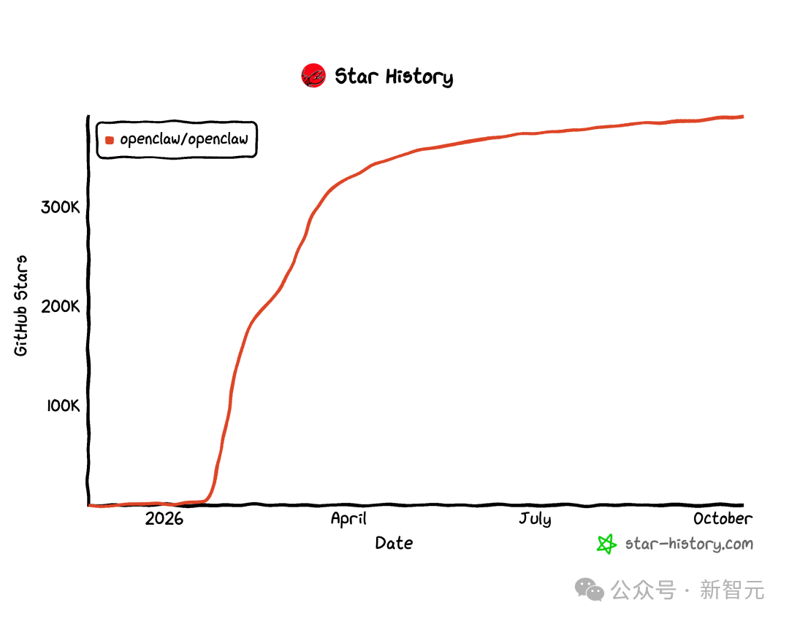
前一阵爆火的 Jev 是闭源的，只能对比 npm 下载量：Jev 前三天下载 3.5 万次，而 REA 已累计约 4.4 万次！
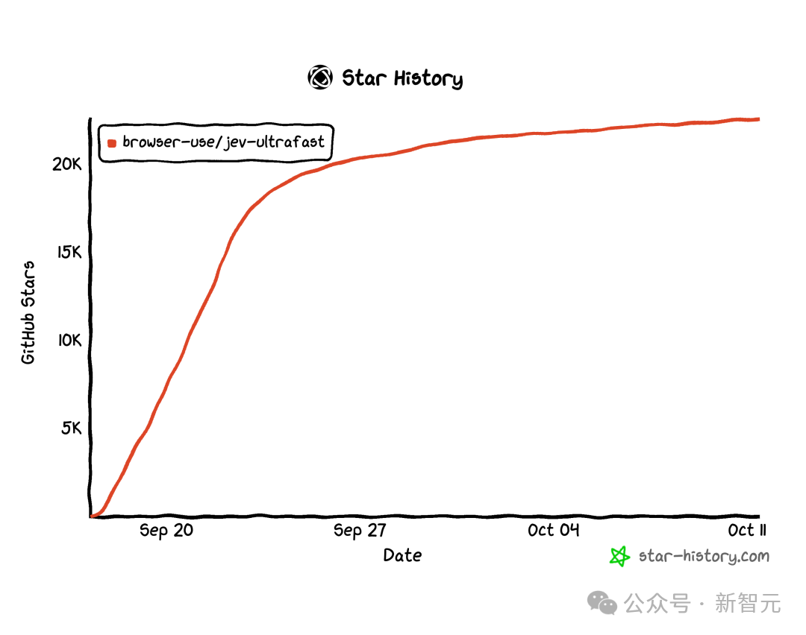
Jev 开源版本 GitHub 项目星标趋势
目前已登顶今日 GitHub Trending 榜首，每天涨数万颗星，大有年初 OpenClaw 的来势汹汹。
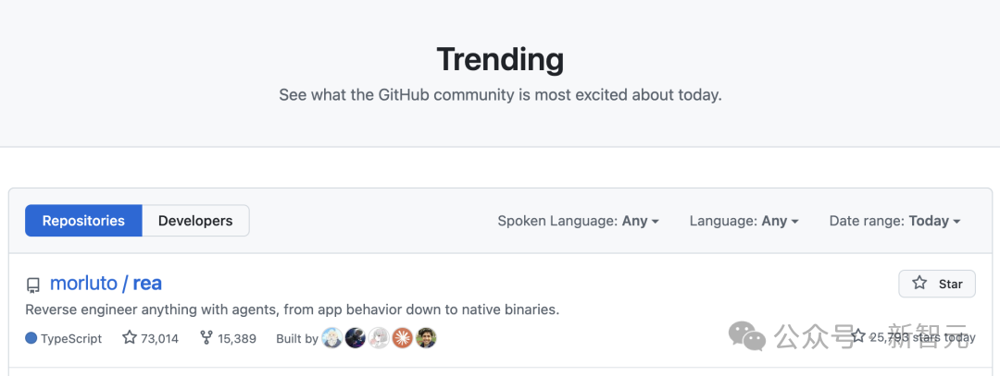
它只干了一桩骇人听闻的勾当：让 AI 把所有商业软件的底裤扒得一干二净。
从今往后，你指着屏幕上任何一个商业 APP 说「这个功能我要了」，你的 Claude Code / Codex 等 Agent 就会通过 REA 直接钻进它的二进制老巢，把汇编代码嚼碎，吐出一段完美的开源实现，顺便连带把「作案证据」都给你列好。
作者甚至已经在努力逆向 Office 这种大型商业软件！
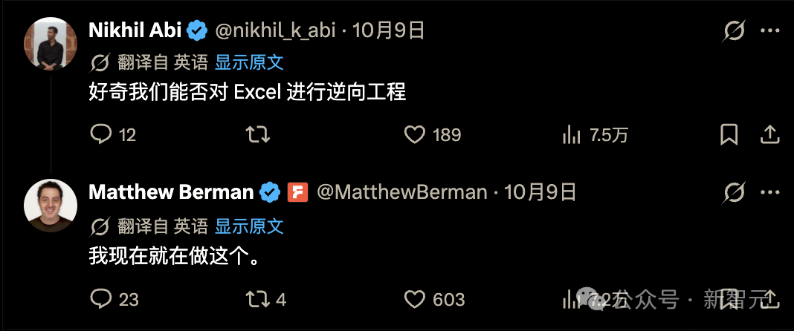
如果真的能完整逆向 macOS / iOS 闭源系统这种最大型的软件，整个世界都将被开源颠覆！
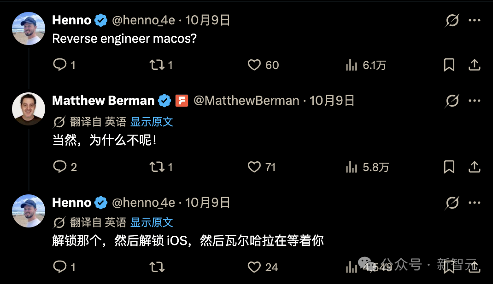
延续了半个世纪的「闭源护城河」神话，在这一刻正式宣告破产；
所谓的软件商业机密，成了一个随时可以被大模型公之于众的笑话。
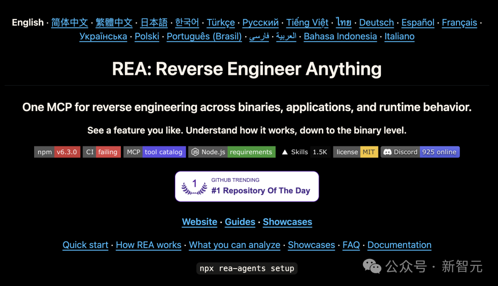
砸烂黑盒
这世界上有两种东西最喜欢装神弄鬼：一种是所谓的「大师」，另一种就是那些把代码打包成二进制文件，然后宣称里面含有「核心科技」的科技公司。
过去，大厂们把一段可能写得像猪圈一样乱的代码编译成机器码，然后这就成了「知识产权」。
普通人看这些二进制文件，就像看天书。
偶尔有几个精通逆向工程的黑客，拿着 IDA 或者 Ghidra 这种上古法器，在汇编代码的屎山里刨食，那叫一门玄学，也是一门手艺。
大厂们因此高枕无忧，觉得只要我不给源码，你永远不知道我的黑盒子里装的是不是几只在踩发电机的猴子。
但是 REA 这玩意儿的出现，把黑盒子给砸了。
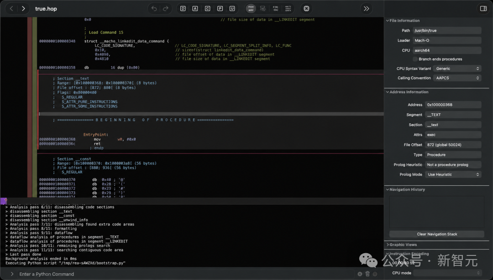
它的逻辑简单粗暴到让人拍案叫绝。
你大模型不是聪明绝顶但手无缚鸡之力吗？你 Ghidra 和 Hopper 不是削铁如泥但没人看得懂吗？
行，REA 做了一个基于 MCP（模型上下文协议）的掮客，把这两位拉到了同一个房间里。
现在的情况是：你不需要懂什么叫 ELF，什么叫 EVM 字节码，你只需要像个大爷一样下指令：
去，看看 Notion 的剪贴板桥接是怎么写的。
然后你的 AI 就会自己调用 REA，反编译、读汇编、顺藤摸瓜找接口，最后用人类的语言向你汇报：
报告老板，它是这么干的，这是 C++ 的重构代码，可以直接用。
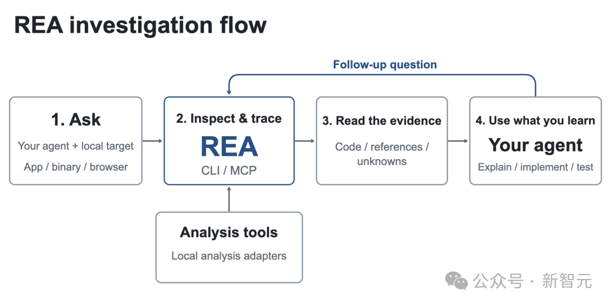
这简直是针对软件行业的「三体智子」！
在 REA 面前，App 的运行行为、原生二进制、安卓的 APK、甚至硬件固件，全都变成了单向透明的玻璃房。

荒谬终局
如果你还觉得这只是个「辅助工具」，那你大概是对人性的贪婪和逻辑的必然性一无所知。
我们在这里做几个大概率会应验的预测：
第一，代码层面的「微创新」将彻底死亡，抄袭将成为一门精准的自动化科学。
以前抄袭还得看 UI 猜逻辑，现在是 AI 直接拿着工具去扒你底层的汇编指令。
那些靠着一两个独家算法和小聪明混饭吃的 SaaS 公司，明天早上醒来就会发现，自己的核心卖点已经被挂在某个开源仓库里免费大放送了。
第二，知识产权（IP）律师们迎来集体的「心肌梗塞」。
［图：图片］
当证明「非核心代码雷同」变得和喝水一样容易时，现有的软件版权法就会变成一纸空文。
你没法起诉一个 AI，而且 AI 复刻出来的代码，逻辑一致但语法全换，连法官都不知道该怎么判。
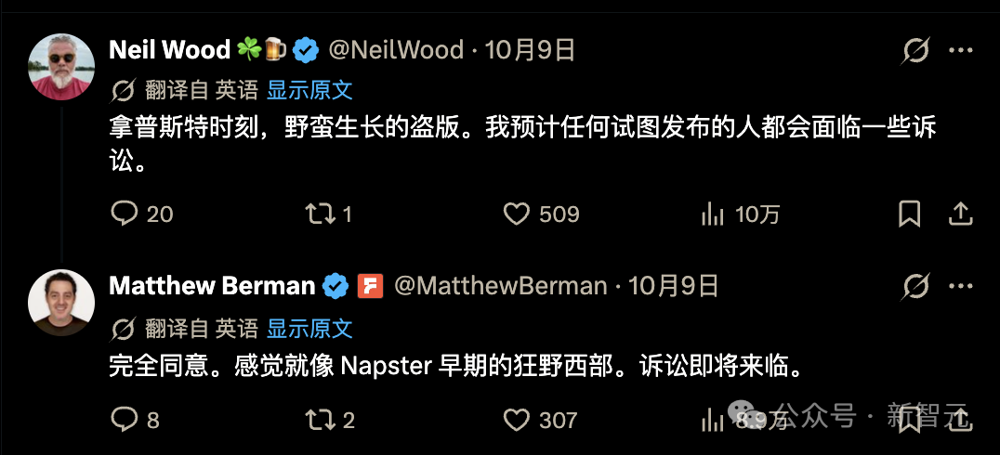
第三，也是最荒谬的一点：未来的软件工程，将是一场比拼谁更恶心的「反人类竞赛」。
既然代码是藏不住的，公司为了保护自己可怜的资产，唯一的出路就是无所不用其极地「代码混淆」。
以 Python 版本的快速排序算法为例，简单优雅的代码经过代码混淆后，画风变成了这样：
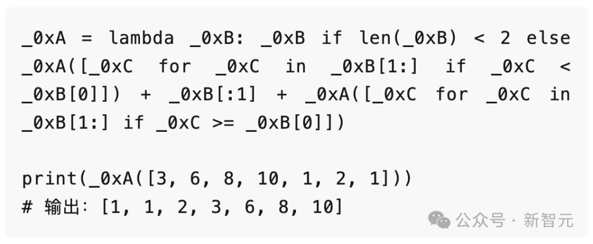
未来的程序员将不再追求代码的优雅、可读性和效率，而是绞尽脑汁地把代码写得像一团乱麻，写成连 AI 看了都想自杀（结束 session）的程度。
我们将进入一个极其滑稽的时代：AI 在努力把屎还原成佳肴，而人类工程师在拼命把佳肴重新做成屎。
王尔德说过，这世界上所有的事物都关乎性，除了性本身。
借用这句话，在 REA 诞生之后，这世界上所有的软件生意都只关乎算力、数据和网络效应，除了代码本身。
代码不再神圣，它只是一堆随时可以被逆向、被剖析、被重构的耗材。
REA 把这层遮羞布扯得太快，以至于很多大公司现在光着屁股站在风里，还以为自己穿着华丽的新装。
参考资料：
https://github.com/morluto/rea
编辑：马可
秒追ASI
⭐点赞、转发、在看一键三连⭐
点亮星标，锁定新智元极速推送！
** **
归属：[[02-输入/按主题/工具与技术/_index|工具与技术]]